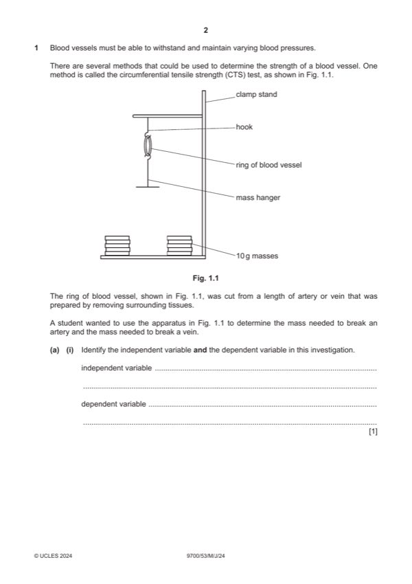

Question 1

Original paper page 2
Part 1(a)(i) — solution
independent variable 1
type of blood vessel / artery and vein
and
dependent variable
mass required to break (the blood vessel) ;
University Press & Assessment 2024 Page 6 of 11
9700/53 Cambridge International AS & A Level – Mark Scheme May/June 2024
Mark points
- Include the ideas shown in the solution above.
Part 1(a)(ii) — solution
any six from: 6
Mark points
- Include the ideas shown in the solution above.
Part 1(b)(i) — solution
Answer: 2
2
mass added / g length of vein / mm percentage increase in
length of ring of vein
Mark points
- Correct result: 2
Part 1(b)(ii) — solution
1 to make a valid comparison (with other blood vessels / veins) ; 1
Mark points
- Include the ideas shown in the solution above.
Part 1(b)(iii) — solution
1 correct orientation for axes and linear scale ; 3
Mark points
- Include the ideas shown in the solution above.
Part 1(b)(iv) — solution
1 curve for artery starts at same point as the vein ; 2
Mark points
- Include the ideas shown in the solution above.
Part 1(b)(v) — solution
any two from: 2
Mark points
- Include the ideas shown in the solution above.
Part 1 — solution
starts at, same point / origin, as using percentage increase ;
Mark points
- Include the ideas shown in the solution above.
Part 1(b)(vi) — solution
any two from: 2
Mark points
- Include the ideas shown in the solution above.
Part 1 — solution
measure from, top of the soil / bottom of stem / AW, to top of the stem / AW ;
Mark points
- Include the ideas shown in the solution above.
Part 1 — solution
(mean stem) length was measured, in / to the nearest, cm ;
Mark points
- Include the ideas shown in the solution above.
Part 1 — solution
highest (concentration of) GA8 with, red light / 680 nm
or
lowest (concentration of) GA1 with, blue light / 470 nm
or
highest (concentration of) GA1, in the dark / with no light ;
Mark points
- Include the ideas shown in the solution above.